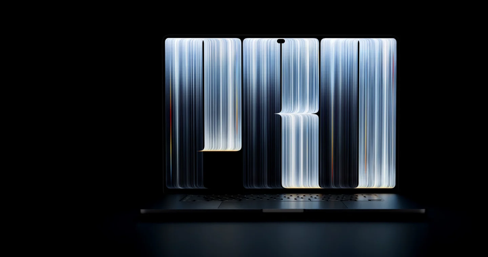
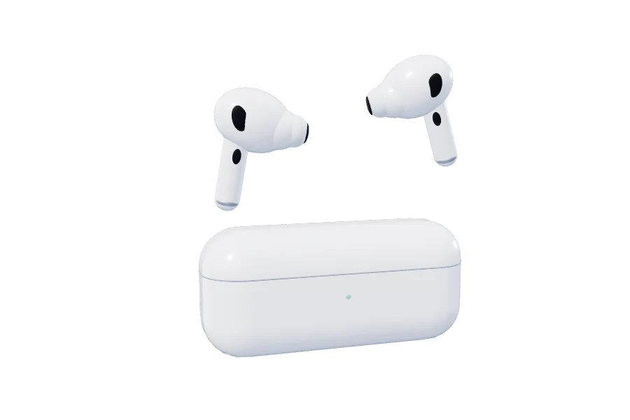
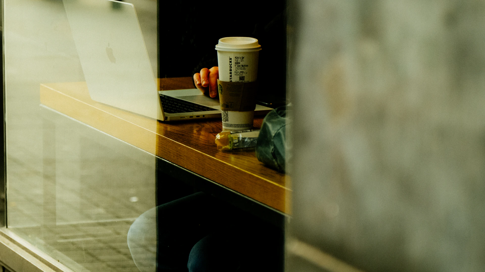
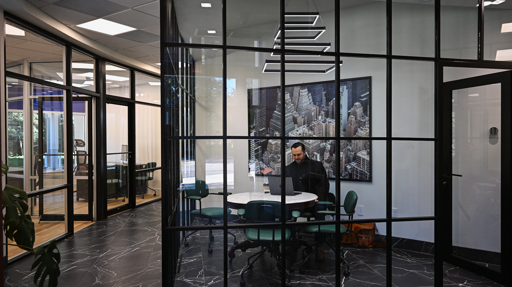
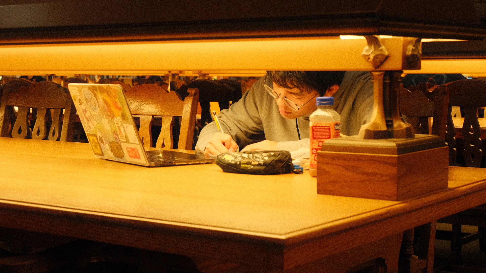
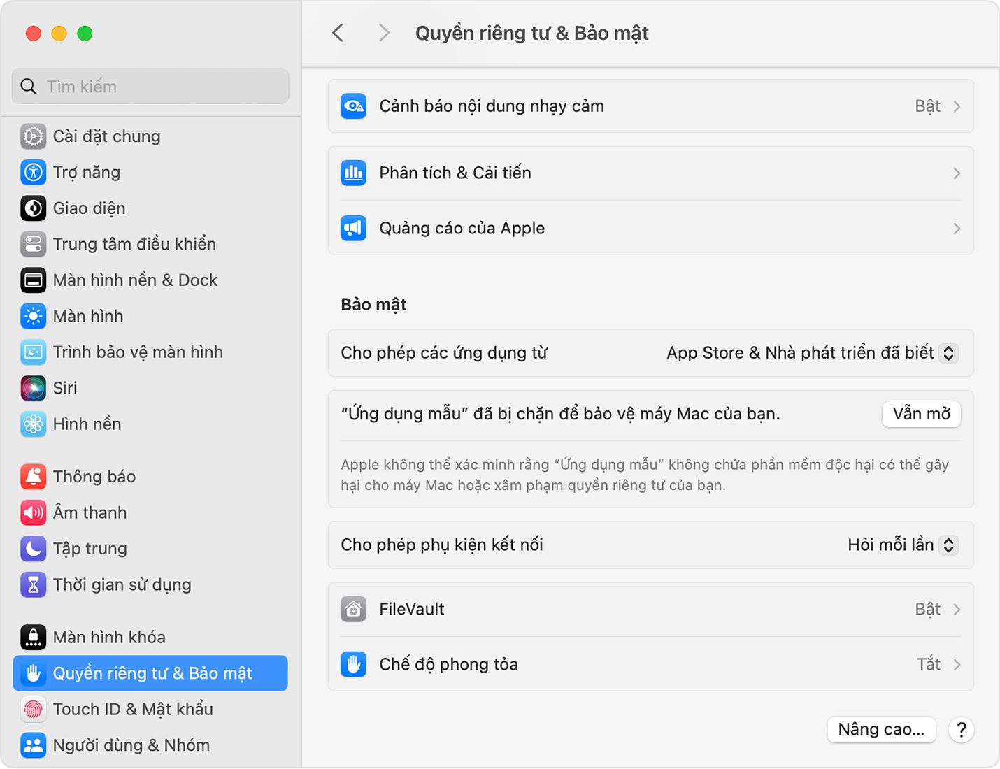
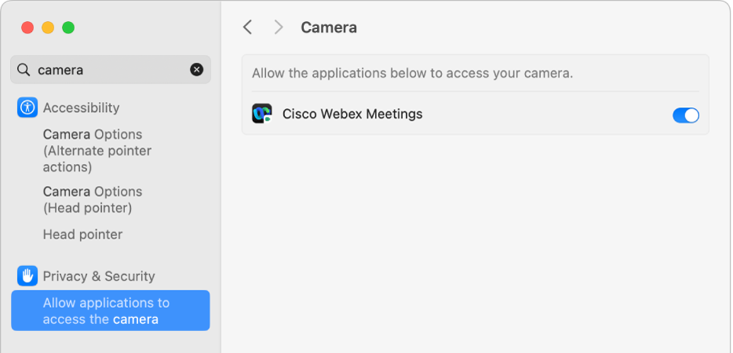

Glance — Ứng dụng chống nhìn trộm màn hình cho Mac & Windows Làm việc riêng tư
Tự động làm mờ màn hình khi bạn quay đầu hoặc rời bàn. Bảo vệ thông tin nhạy cảm ở quán cafe, văn phòng mở và nơi công cộng.

Cách hoạt động
Che màn hình khi rời bàn
Camera
AirPods
Làm mờ
màn hình
màn hình
Thanh menu
Linh hoạt độ nhạy của cảm biến camera
Camera trên Mac
Khi bạn nhìn thẳng, cả màn hình đều rõ.
14° · 20° · 28°
toàn màn hình
Cảm biến hoạt động qua Camera và Airpods

0°Góc quay đầu
Chuyển động đầuAirPods tương thích
Góc quaySo với hướng đã căn giữa
Làm mờ màn hìnhMột bên hoặc toàn màn hình
Tìm hiểu Glance
Chế độ làm mờ
Chế độ một bên giữ phần bạn đang nhìn rõ nét. Bạn cũng có thể chọn làm mờ toàn màn hình khi quay đầu.
Ứng dụng tự động làm mờ màn hình khi bạn quay mặt đi.
Theo cách của bạn. Chọn camera hoặc AirPods, rồi chọn vùng làm mờ.
Rời bàn. Màn hình được làm mờ khi camera không còn thấy bạn và bạn ngừng thao tác.
Quyền riêng tưngay trên máy Mac
-
Xử lý ngay trên Mac
Glance không gửi hình ảnh từ camera lên máy chủ.
Glance dùng Vision trên Mac để đọc góc quay đầu từ các khung hình camera. Quá trình nhận diện và làm mờ không cần gửi hình ảnh hay nội dung màn hình lên máy chủ. -
Không cần đăng ký khuôn mặt
Camera dùng hình ảnh để ước lượng hướng quay đầu.
Bạn không cần tạo hồ sơ nhận diện khuôn mặt. Glance đọc góc đầu tương đối so với hướng nhìn thẳng mà bạn đã căn. Ứng dụng không dùng camera để xác định danh tính của bạn. -
Dùng AirPods thay cho camera
AirPods tương thích cung cấp dữ liệu chuyển động.
Khi chọn AirPods, Glance dùng cảm biến chuyển động của tai nghe để theo dõi góc quay đầu và không dùng camera để nhận diện. Nếu muốn Glance che màn hình khi bạn rời chỗ, hãy chọn chế độ camera. -
Khi gọi video
Glance tạm ngừng làm mờ khi nhận ra một số ứng dụng gọi video.
Glance nhận biết khi Zoom, FaceTime, Teams và một số ứng dụng tương thích đang ở phía trước. Ứng dụng cũng tạm ngừng làm mờ nếu phiên camera bị gián đoạn. Khả năng nhận biết tùy vào ứng dụng và cách bạn gọi video. -
Hiệu ứng làm mờ của macOS
Camera dùng cấu hình độ phân giải thấp.
Ở chế độ camera, Glance giới hạn tần suất phân tích và bỏ qua các khung hình đến trễ. Phần làm mờ dùng hiệu ứng của macOS. Bạn truy cập các thiết lập từ thanh menu.
Làm việc ở mọi nơi.



Glance và Miếng dán chống nhìn trộm
Giải pháp phần mềm thông minh thay thế miếng dán lọc sáng vật lý truyền thống.
Miếng dán vật lý
Miếng dán chống nhìn trộm
- Làm giảm độ sáng và độ tương phản màn hình Retina
- Nguy cơ cấn vỡ màn hình MacBook khi gập máy
- Bất tiện: Phải tháo ra lắp vào thường xuyên
- Tốn chi phí mua sắm phụ kiện (400.000đ – 1.000.000đ)
Phần mềm Glance
Glance Screen Privacy
- Giữ nguyên 100% độ sáng và màu sắc Retina khi nhìn thẳng
- Tự động làm mờ tức thì chỉ khi bạn quay đầu hoặc rời máy
- Không chạm vào phần cứng, an toàn tuyệt đối cho màn hình
- Hoàn toàn miễn phí, cài đặt và sử dụng chỉ trong 1 phút
Tải Glance
Glance miễn phí. Bạn không cần thanh toán để sử dụng.
Mac · macOS 14 trở lên · Apple silicon
Cài đặt trên Mac
- Mở tệp Glance-macOS-1.0.0.zip trong thư mục Tải về.
- Kéo Glance.app vào thư mục Ứng dụng và mở ứng dụng.
- Nếu macOS báo không thể xác minh, đóng cảnh báo. Vào Cài đặt hệ thống → Quyền riêng tư & Bảo mật và chọn Vẫn mở bên cạnh thông báo về Glance.
- Xác nhận bằng mật khẩu hoặc Touch ID nếu được yêu cầu. Mở Glance và cho phép truy cập camera nếu bạn dùng chế độ camera.

Xem hướng dẫn từ Apple ↗
Xem cách cấp quyền camera ↗Bản Mac chưa được Apple xác minh. Chỉ tiếp tục khi bạn tin tưởng nguồn tải và tệp không bị thay đổi. Nếu macOS báo ứng dụng bị hỏng hoặc có phần mềm độc hại, đừng mở tệp.
Cài đặt trên Windows
- Tải Glance-Windows.zip về máy.
- Nhấp chuột phải vào tệp vừa tải, chọn Extract All... (Trích xuất tất cả) để giải nén ra thư mục.
- Mở thư mục vừa giải nén và bấm đúp vào Glance.exe (hoặc start_windows.bat) để mở ứng dụng ngay mà không cần cài đặt thêm Python.
- Trong Glance, chọn Bật camera và cho phép ứng dụng truy cập camera trong Windows.
Bản Windows đã đóng gói sẵn tệp chạy độc lập Glance.exe (Windows 10/11 64-bit). Nếu Windows SmartScreen hiện thông báo bảo vệ, chọn More info (Thêm thông tin) → Run anyway (Vẫn chạy).
Xem hướng dẫn quyền camera của Microsoft ↗Câu hỏi thường gặp
Dùng Glance khi không có AirPods có được không?
Có. Camera tích hợp trên máy Mac thông qua Apple Vision Framework là hoàn toàn đủ để Glance nhận diện góc quay đầu và tự động làm mờ màn hình hoặc che màn hình khi bạn rời bàn làm việc.
Glance khác gì so với miếng dán chống nhìn trộm màn hình?
Miếng dán vật lý làm tối màn hình, giảm độ sắc nét Retina, đổi màu và có nguy cơ cấn vỡ màn hình MacBook khi gập máy. Glance là giải pháp phần mềm thông minh: màn hình luôn sáng rõ 100% chuẩn Retina khi bạn nhìn thẳng, và chỉ tự động làm mờ khi bạn quay đầu đi hoặc đứng dậy rời đi. Ứng dụng hoàn toàn miễn phí.
Dữ liệu hình ảnh từ camera có được gửi lên máy chủ không?
Hoàn toàn không. Glance hoạt động 100% trên thiết bị của bạn (On-device) thông qua Apple Vision Framework. Ứng dụng chỉ tính toán góc quay đầu tương đối, không ghi hình, không nhận diện danh tính và tuyệt đối không gửi bất kỳ hình ảnh nào ra mạng Internet.
Khi đang gõ phím hoặc gọi video thì màn hình có bị mờ không?
Glance thông minh tự động nhận diện khi bạn đang thao tác bàn phím hoặc chuột để giữ màn hình luôn rõ ràng. Khi bạn tham gia các cuộc gọi video như FaceTime, Zoom hay Microsoft Teams, Glance cũng tự động tạm ngừng làm mờ để không làm gián đoạn công việc.
Glance hỗ trợ những hệ điều hành nào?
Glance tối ưu tốt nhất cho macOS 14 (Sonoma) trở lên trên các dòng máy Mac dùng chip Apple Silicon (M1, M2, M3, M4). Ngoài ra, Glance có phiên bản thử nghiệm hỗ trợ Windows 10/11 chạy qua môi trường Python.
Tải và sử dụng Glance có mất phí không?
Glance hoàn toàn miễn phí cho tất cả người dùng, không có quảng cáo và không yêu cầu đăng ký tài khoản. Nếu thấy ứng dụng hữu ích, bạn có thể tự nguyện ủng hộ dự án qua PayOS trên trang web.